Big Orange Crayonmusical things(Some Band), Paris, the Sophie Drinker and the Naysayer The Flywheel, Eastampton, MA August 7th, 2002 It's been a long time since I've been to the Flywheel, which is a shame because it's one of my places to go to shows... and come to think about it, every time I've gone I've seen the Naysayer. Weird. I'll be going there next Saturday to see Ted Leo if everything works out, so I guess it won't be that way for long. Pictures: [some band whose name I forgot] 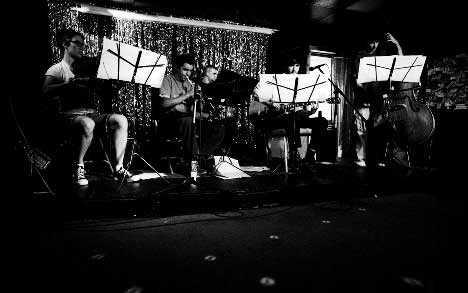 Paris 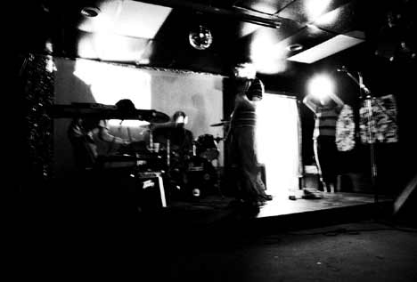 They turned off most of the lights for Paris' set, so I did a full-second exposure and that's why this looks weird... Sophie Drinker 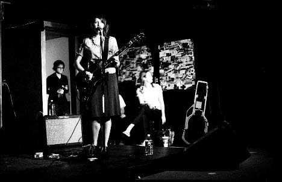 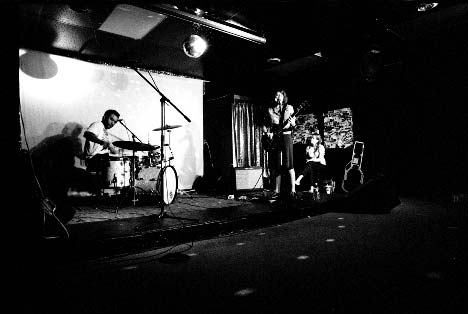 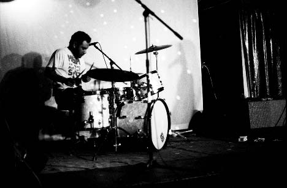 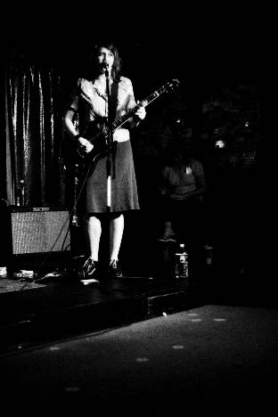 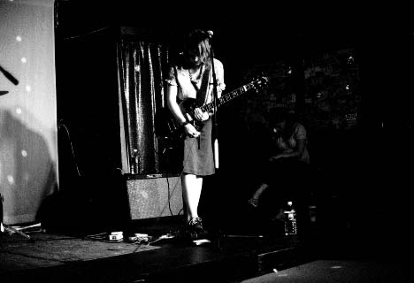 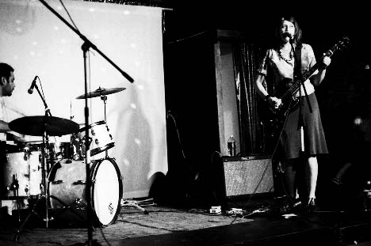 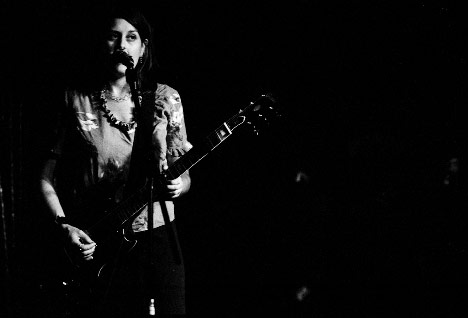 here's a bigger version of this one 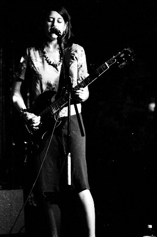 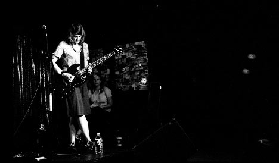 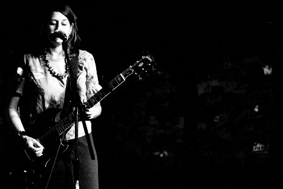 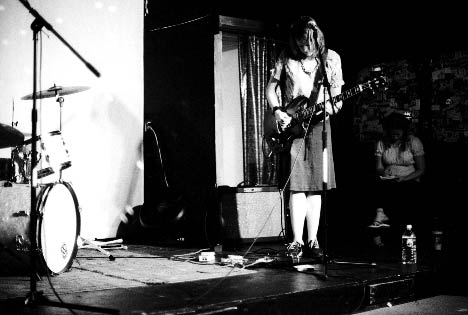 The Naysayer 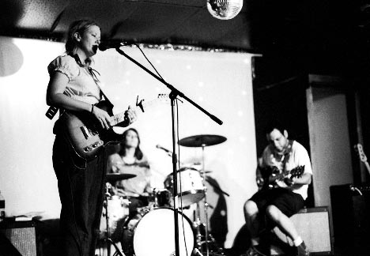 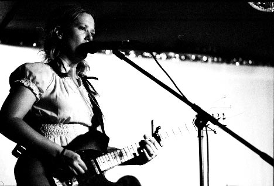 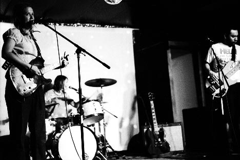 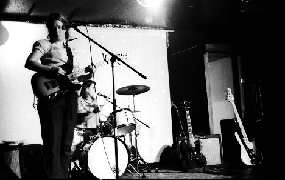 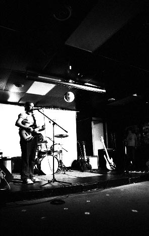 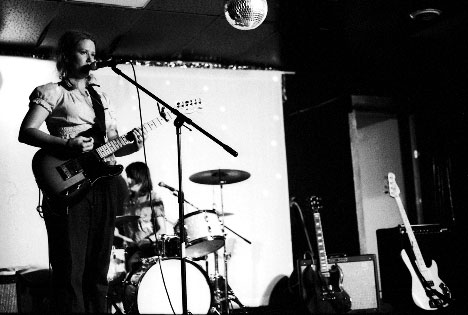 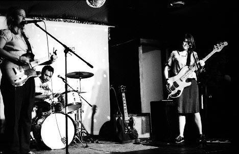 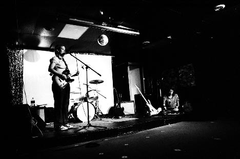 Camera stuff: Body: Nikon F3HP Lenses: 50mm f/1.4, 105mm f/2.5 and 24mm f/2.8 Nikkors Film: Fuji Neopan 1600 exposed at 3200, developed in Microphen for 6 minutes at 21 degrees. I shouldn't have agitated it quite so much... Please don't use these elsewhere unless you are in one of the bands or are a nice person. |
{kind=link}